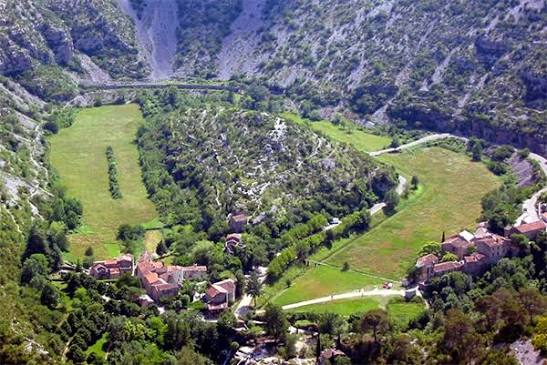

Cirque de
NavacellesGrand Site de France


⟹ Sites Emblématiques ⟸
De la mer aux causses, près de 200 millions d’années d’histoire géologique. Le Cirque de Navacelles s’inscrit dans les grands plateaux calcaires des causses méridionaux. Les calcaires qui dominent aujourd’hui le paysage proviennent de sédiments accumulés au fond d’une mer ancienne, il y a environ 200 millions d’années. Le retrait progressif de la mer, puis les mouvements tectoniques et le soulèvement des plateaux, ont préparé le relief actuel. À partir d’environ 15 millions d’années, l’érosion fluviale a profondément entaillé les causses et donné naissance aux gorges spectaculaires de la Vis.
Un territoire karstique façonné par l’eau. Le calcaire est fissuré et soluble : l’eau de pluie s’y infiltre, élargit les fractures et creuse au fil du temps un véritable réseau souterrain de galeries, puits et cavités. La Vis illustre parfaitement ce fonctionnement. Née sur les terrains schisteux et granitiques du massif du Saint-Guiral, elle s’enfonce sous terre au contact des calcaires près d’Alzon, puis réapparaît plus loin aux Moulins de la Foux. Cette résurgence spectaculaire est l’un des phénomènes hydrogéologiques majeurs du territoire.
La naissance du méandre abandonné. Au fond des gorges, la Vis décrivait autrefois une large boucle. Il y a environ 6 000 ans, la rivière a fini par recouper son propre méandre et par emprunter un tracé plus direct. L’ancien lit s’est trouvé abandonné, dessinant le célèbre croissant de prairie qui entoure aujourd’hui le « Rocher de la Vierge ». Le cirque actuel est donc à la fois le résultat d’une très longue histoire géologique et d’un événement relativement récent à l’échelle des temps de la Terre.

Une présence humaine dès la Préhistoire récente. Les causses ne sont pas des espaces demeurés sauvages jusqu’à l’époque moderne. Dès le Néolithique, les premiers agriculteurs et éleveurs s’y installent et commencent à transformer les paysages. Dolmens, menhirs, cromlechs et autres vestiges mégalithiques témoignent encore de cette occupation ancienne, de pratiques funéraires collectives et d’une organisation progressive du territoire.
L’ouverture des paysages par l’agropastoralisme. Vers le IIIe millénaire avant notre ère et durant les millénaires suivants, les défrichements destinés à créer des pâturages contribuent à ouvrir les plateaux. L’élevage ovin devient progressivement l’une des activités structurantes des causses. Ce travail humain explique en grande partie les vastes paysages ouverts actuels : pelouses sèches, parcours pastoraux, champs installés dans les dépressions fertiles et réseaux de drailles utilisés pour le déplacement des troupeaux.
Apprendre à vivre avec le manque d’eau. Sur les plateaux calcaires, l’eau disparaît rapidement dans le sous-sol. Les habitants ont donc développé des systèmes ingénieux pour la recueillir et la conserver : citernes creusées ou bâties, abreuvoirs et lavognes, petites mares aménagées pour les troupeaux. Les grottes ont également pu servir d’abris, de réserves ou de lieux d’extraction d’argile et de calcite. Cette maîtrise de l’eau a longtemps conditionné l’implantation des fermes et la vie quotidienne.
La pierre comme ressource et comme paysage. Les pierres retirées des champs n’étaient pas perdues : elles servaient à construire murets, enclos, terrasses, cazelles, bergeries et fermes caussenardes. Pendant des siècles, l’architecture locale s’est donc élaborée presque directement à partir du sol. Cette accumulation d’aménagements modestes donne aujourd’hui au Grand Site une profondeur historique particulière, car les traces de l’activité humaine se confondent souvent avec le relief naturel.
Des gorges habitées et exploitées. Si les plateaux sont surtout associés à l’élevage, le fond des gorges offre davantage d’eau et de terres fertiles. Autour de la Vis se développent jardins, prairies, petits terroirs cultivés et moulins. Les Moulins de la Foux profitent directement de la puissance de la résurgence. Les cavités et ressources minérales du sous-sol ont elles aussi été exploitées à différentes périodes, du Moyen Âge jusqu’au début du XXe siècle.
Le hameau de Navacelles. Installé au fond du cirque, à proximité immédiate de la rivière, le hameau bénéficie d’un micro-terroir plus favorable que les plateaux environnants. Maisons de pierre, jardins, anciens chemins et ponts témoignent d’une économie rurale longtemps fondée sur l’agriculture, l’élevage et l’utilisation de l’eau. Son isolement relatif a contribué à préserver un paysage bâti très étroitement lié au site naturel.
Un territoire de circulation. Malgré son relief spectaculaire, Navacelles n’a jamais été totalement coupé des territoires voisins. Les drailles pastorales, chemins muletiers et voies rurales reliaient les causses, les hameaux, les zones de pâturage et les vallées. Ces itinéraires ont assuré pendant des siècles les échanges de bétail, de laine, de produits agricoles et de matériaux, bien avant l’aménagement des routes modernes.
Du monde rural au paysage patrimonial. À partir du XIXe siècle, puis plus fortement au XXe siècle, l’exode rural et les transformations de l’agriculture entraînent un recul démographique et l’abandon d’une partie des usages traditionnels. Dans le même temps, le caractère spectaculaire du cirque attire voyageurs, excursionnistes puis touristes. La perception du lieu change : d’espace de travail et de vie, il devient également un paysage remarquable à protéger.
Une protection construite progressivement. La sauvegarde du Cirque de Navacelles ne concerne pas seulement le point de vue célèbre : elle englobe désormais les gorges de la Vis, les causses, les activités pastorales et les villages qui donnent au paysage sa cohérence. Le territoire se trouve au cœur du bien « Causses et Cévennes », inscrit en 2011 sur la Liste du patrimoine mondial de l’UNESCO comme paysage culturel de l’agropastoralisme méditerranéen.
Le label Grand Site de France. Après plusieurs décennies de protection et de gestion de la fréquentation, le Cirque de Navacelles obtient le label Grand Site de France en 2017. Le label a été renouvelé en 2024. Il reconnaît une politique destinée à préserver l’esprit des lieux, améliorer l’accueil des visiteurs, protéger les paysages et maintenir les activités agricoles qui continuent de les façonner.
Une histoire toujours en cours. Navacelles n’est donc pas seulement une curiosité géologique. C’est un paysage culturel vivant, produit par l’action combinée de la mer ancienne, des mouvements géologiques, de la Vis, de plusieurs millénaires d’agropastoralisme et des choix contemporains de conservation. Lire le cirque, c’est parcourir près de 200 millions d’années d’histoire naturelle et plusieurs milliers d’années d’histoire humaine.